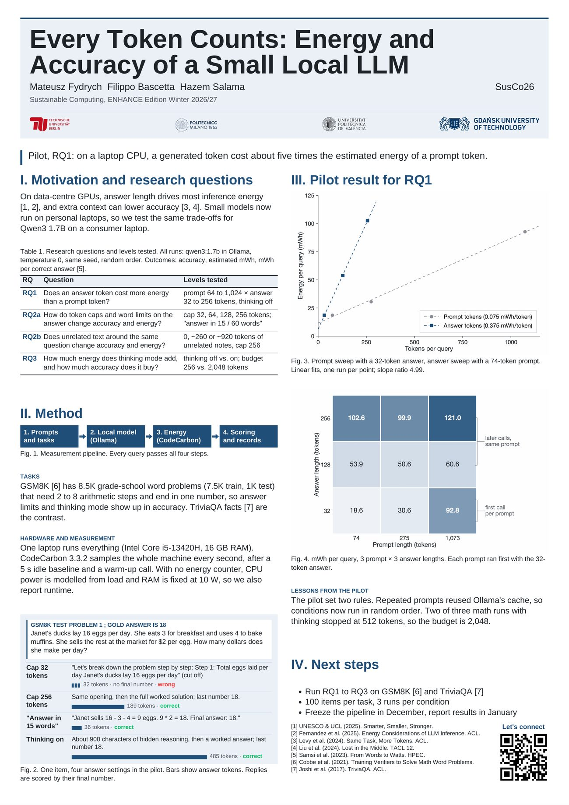
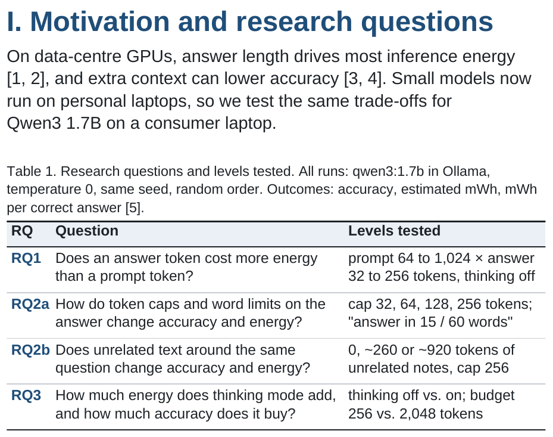
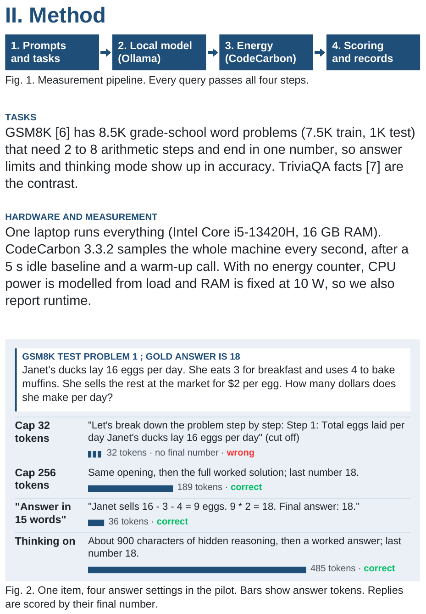
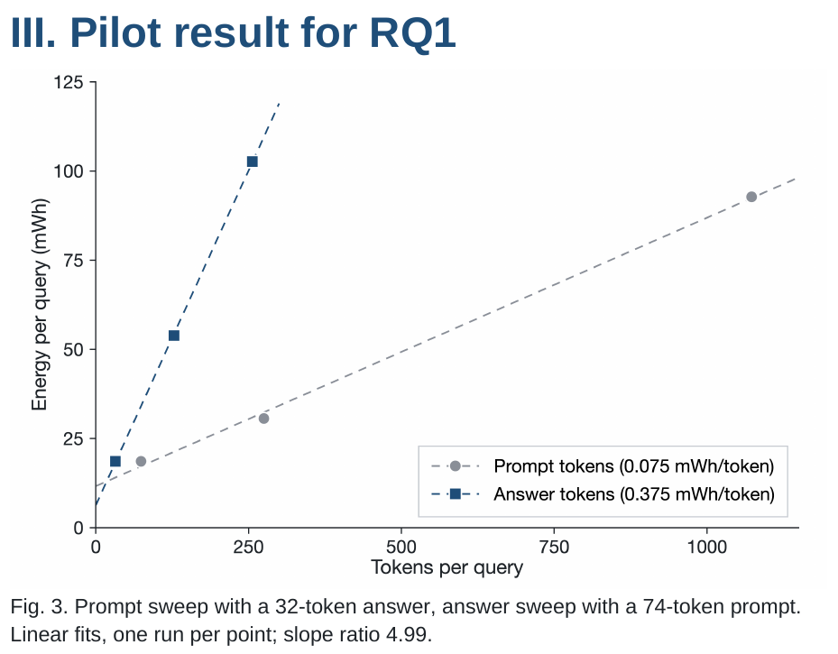
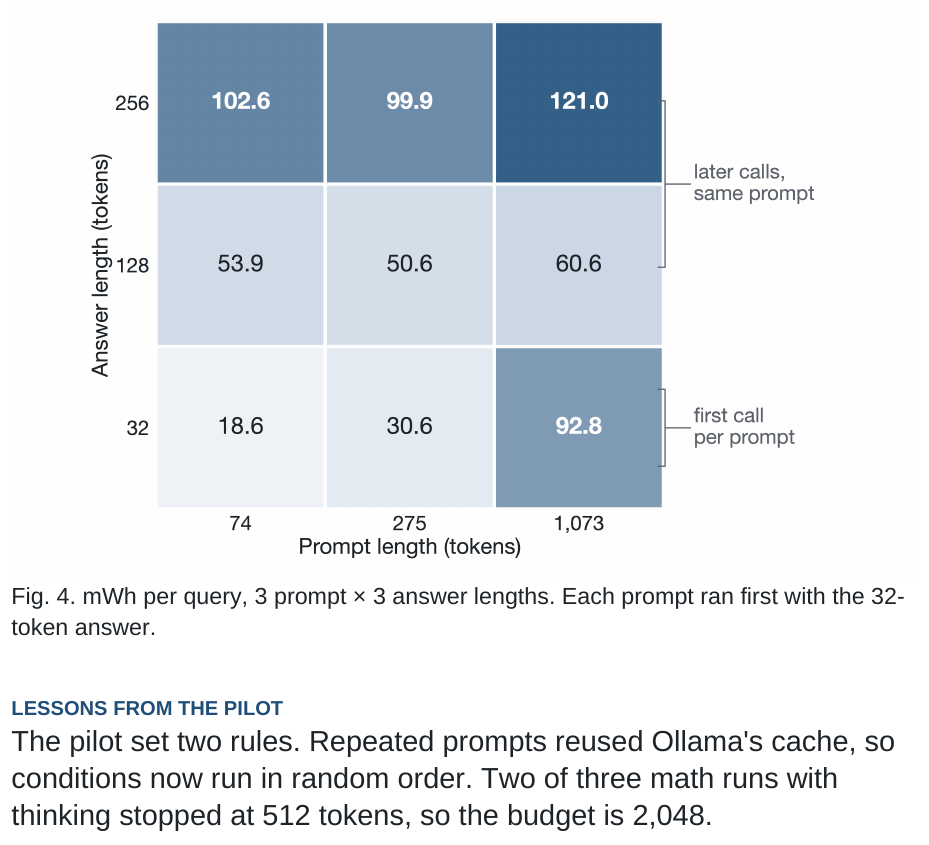
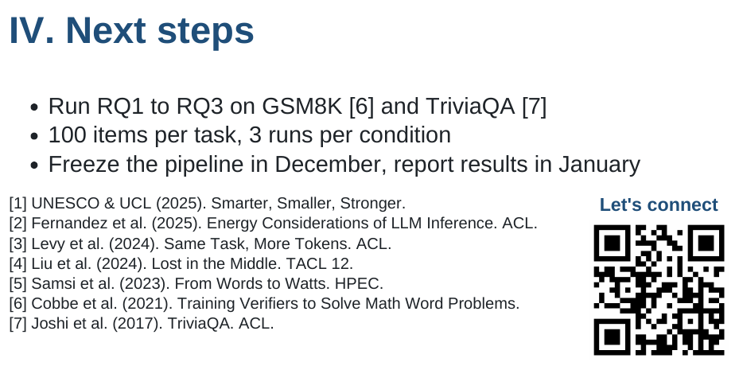

The page is written for all three of us. Read it in this order. The first five blocks are shared knowledge; every one of us can be asked about any part of the project, because the seminar is graded per person VL0 p.55.
The story: the one sentence, the five steps of the argument, and a 5-minute pitch for visitors at the poster.
Shared theory: energy, LLM inference, measurement, metrics, statistics, Green AI, the papers. This is the "why".
Poster walk-through: every sentence and number on the poster, where it comes from, and what it does not mean.
The code: how run_experiment.py produced the numbers. Filippo in depth, the others at least once.
Weak spots: the places where an examiner can push, with short honest answers.
Your own script (Mateusz, Filippo, Hazem), with a rehearsal timer, a cue card and the numbers you must know.
The poster guide asks for a poster that "supports a 5 minute explanation" and is understandable without the presenter Poster guide, slide 2. Our own plan for the talk is 3 × 10 minutes.
Next deliverable: the 8 to 10 page scientific report, due Monday 11 January 2027 VL0 p.55, VL6 p.2. The poster's "report results in January" refers to it.
Source tags
Poster final hand-in PDF
CSV rq1_7results_prelim/experiment_results.csv, run id
raw logresults_prelim/emissions_raw.csv (CodeCarbon)
statsfigures/summary_stats.json
R:380public/kit/run_experiment.py, line
VL9 p.58 lecture PDF, page index of the PDF
[2] p.4 cited paper, page
outside course model card, Ollama library, CodeCarbon source or general knowledge
derived our own arithmetic on the pilot data
Lecture page numbers are PDF page indices. The printed slide number differs in VL2, in VL9 from p.63 and in VL0 from p.54.
The story in 60 seconds

The final hand-in (Canva v5 export, A0 portrait). Reading order: left column I and II, right column III and IV.
WhyOn data-centre GPUs, the answer is the expensive part of an LLM query, and extra context can hurt accuracy Poster, [1] [2] [3] [4]. Small models now run on ordinary laptops, where nobody has checked this.
WhatWe test the same trade-offs for Qwen3 1.7B on a consumer laptop: four research questions on prompt vs answer tokens (RQ1), answer limits (RQ2a), unrelated context (RQ2b) and thinking mode (RQ3) Poster, Table 1.
HowEvery query passes four steps: prompt and task, the local model in Ollama, energy from CodeCarbon, scoring and records Poster, Fig. 1. Energy is estimated, because the laptop has no energy counter.
FoundIn a 75-run calibration pilot, one answer token cost 0.375 mWh and one prompt token 0.075 mWh, a ratio of 4.99 Poster, Fig. 3. The pilot also exposed two problems: Ollama's prompt cache and a thinking budget that was too small.
NextRun RQ1 to RQ3 on GSM8K and TriviaQA with 100 items per task, 3 runs per condition and 95 % bootstrap intervals; freeze the pipeline in December, report in January Poster, IV.
The 5-minute pitch
For a visitor who stops at the poster. Any of us must be able to give it. About 600 words; say it, do not read it.
"Hello, we are Group 10. Our poster is called Every Token Counts. The question behind it is simple: when a language model answers you, where does the energy go?
Studies on data-centre and workstation GPUs found two things. First, the answer costs much more than the prompt: in the UNESCO study, halving the prompt saved about 5 % of the energy, but halving the answer saved 54 %. Second, extra text in the prompt can make models less accurate, even far below their context limit. But small models such as Qwen3 with 1.7 billion parameters now run on normal laptops, on the CPU. Nobody has checked whether the same trade-offs hold there. That is our project.
(point at Table 1) We ask four questions. RQ1: does an answer token cost more energy than a prompt token? RQ2a: what do token caps or a word limit like 'answer in 15 words' do to accuracy and energy? RQ2b: what does unrelated text around the same question do? And RQ3: how much energy does thinking mode add, and how much accuracy does it buy?
(point at Fig. 1) The method is a four-step pipeline. A prompt is built from a task, the model runs locally in Ollama, CodeCarbon samples the whole machine every second, and the reply is scored and logged. One honest point: this laptop has no hardware energy counter, so CodeCarbon models CPU power from the processor load and assumes 10 watts for the RAM. Our energy numbers are estimates, which is why we also report runtime.
(point at Fig. 2) Here is one real item, a GSM8K maths problem whose answer is 18. With a 32-token cap the model is cut off before it reaches a number. With 256 tokens it writes a full solution in 189 tokens. With 'answer in 15 words' it gets it right in 36 tokens. With thinking on it is also right, but uses 485 tokens. Same answer, very different cost.
(point at Fig. 3) This is our pilot result for RQ1. We varied the prompt length with a short answer, and the answer length with a short prompt. Each extra answer token cost about 0.375 milliwatt-hours, each extra prompt token about 0.075, so roughly five times less. The reason is how models generate text: the prompt is read in one parallel pass, while the answer is written one token at a time.
(point at Fig. 4) The heat map shows all nine combinations. One cell looks wrong: the long prompt with a short answer costs more than with a longer answer. That is because that call came first and had to read the whole prompt; the next calls reused Ollama's cache. So the pilot taught us two rules: run conditions in random order, and give thinking mode a 2,048-token budget, because two of three maths runs stopped at 512.
This is a calibration pilot, one run per point, so we do not claim more than the direction of the effect. In January we run all four questions on GSM8K and TriviaQA, 100 items per task, three runs per condition, with bootstrap confidence intervals.
If you want to follow the project, the QR code leads to our links. Do you have any questions?"
Shared theory
Ten short topics. Each says what the idea is, why it matters for our poster, and where it comes from. Mateusz presents most of this in Part 1, but all three of us need it for the questions.
1. Power, energy and carbon
Power is a rate: how fast energy is used, in watts. 1 W = 1 J/s. Energy is the amount used over time, in joules or watt-hours VL0 p.36–37.
Energy over an interval = average power × elapsed time; in general E = ∫ P(t) dtVL2 p.41VL6 p.11.
Units we use: 1 Wh = 3,600 J, so 1 mWh = 3.6 Jderived.
Lower power does not mean lower energy. The same task at 15 W for 20 s uses 300 J; at 40 W for 4 s it uses 160 J VL7 p.7. Time matters as much as watts.
Energy efficiency = useful work per unit of energy VL0 p.37. Energy proportionality: an ideal machine uses almost nothing when idle and scales with load VL0 p.39.
Operational emissions = energy × carbon intensity of the electricity (gCO₂e/kWh). Example on the slide: 200 W for 1 hour = 0.2 kWh; at 400 gCO₂e/kWh that is 80 g VL6 p.11VL0 p.41.
With our own numbers
The laptop drew an estimated 18.31 W when idle and 24.34 W on average while answering stats. So inference added only about 6 W on top of idle derived. The laptop is far from energy-proportional.
Janet's ducks with a 256-token cap ran 10.13 s and used 66.52 mWh, which is 239 J or about 23.6 W CSV rq2a_13. A useful rule of thumb from the pilot: one second of answering ≈ 6.4 mWh (energy = 6.39 × seconds + 2.84, r = 0.998) derived.
The whole pilot, 75 queries, used about 3.87 Wh and emitted 1.47 g CO₂e at Germany's intensity of about 380 g/kWh raw logstats. The same energy would be 0.14 g in Sweden and 2.75 g in India stats. Carbon depends on where you run, energy does not.
2. How an LLM answers: tokens, prefill and decode
A large language model is trained to predict the next token VL9 p.17. A token is a piece of a word. European languages need about 1.2 to 1.5 tokens per word; "more tokens means more computation" VL9 p.23.
Inference pipeline: tokenise the prompt, run the model "again and again" to predict each next token, then post-process VL9 p.23.
Prefill (reading the prompt)
All prompt tokens are processed together, in parallel.
Fills the KV cache with the internal state of every prompt token.
Heavy computation, typically compute-bound VL9 p.24[2] p.2.
Decode (writing the answer)
One token at a time. Each new token needs a full pass through the model and reads the KV cache.
Stops at an end token or at the maximum number of tokens (our cap, num_predict).
Slower, sequential, typically memory-bound VL9 p.24[2] p.2.
KV cache: the keys and values of the attention layers for tokens already processed, kept so they are not computed again outside course. The lecture diagram names it but does not explain it VL9 p.24.
Why an answer token costs more than a prompt token
In prefill, every weight the CPU loads from memory is used for many prompt tokens at once. In decode, all weights of the model (about 1.4 GB for the 4-bit Qwen3 1.7B) have to pass through the processor for every single new token. So decode is limited by memory bandwidth and produces far fewer tokens per second. In our pilot the laptop read about 81 prompt tokens per second but wrote only about 21 answer tokens per secondderived from CSV latencies. Power stayed around 23 to 25 W, so energy follows time, and the energy ratio lands near 4 to 5.
The same direction is reported on GPUs: "Decoding is more energy intensive per token than prefill" [2] p.4, and decoding dominates total energy "except for tasks with shorter generation lengths" [2] p.4. In the UNESCO study, halving the prompt saved 5 % and halving the response 54 % [1] p.17–18VL9 p.58.
Thinking mode
Thinking (reasoning) mode makes the model write hidden reasoning before the visible answer. Those are decode tokens like any other, and in Ollama they count toward the same cap R:661.
Course numbers from Oviedo et al. 2026: DeepSeek-R1 used a median of 0.63 Wh per normal query but 10.60 Wh with test-time scaling; Llama 3.1 405B 0.39 Wh vs 3.39 Wh VL9 p.38. "Long answers, reasoning, images and video cost much more" VL9 p.36.
Qwen3 has thinking on by default and can switch it off per request. Its model card says not to use greedy decoding in thinking mode, because it can cause endless repetition, and recommends temperature 0.6 Qwen3-1.7B model card. We used temperature 0. Keep this in mind for RQ3.
32,768 tokens model card; Ollama lists 40K. Our longest prompt was 1,073 tokens CSV rq1_7.
Runtime
Ollama, tag qwen3:1.7bR:53. Today that tag is the 4-bit Q4_K_M build, 1.4 GB Ollama library. We did not log the Ollama version or the model hash, so "4-bit" is very likely, not recorded.
Hardware
Intel Core i5-13420H, 12 logical CPUs, 16 GB RAM, Windows 11, no GPU used raw logPoster
Quantisation stores weights with fewer bits: less memory and less data to move. On Llama 3.1 8B, AWQ 4-bit cut energy by 44 % with 71.2 % vs 70.5 % accuracy; GPTQ −35 %, bitsandbytes −22 % VL9 p.53[1] p.16.
"The greenest model is the smallest one that meets the requirement" VL9 p.51. Small task-specific models used 15 to 50 times less energy than the 8B model on their own tasks, but were weaker on unfamiliar data VL9 p.59[1] p.19.
Edge inference: "run small models close to the data", but "idle capacity also uses energy" VL9 p.61. On our laptop the idle share was large: 18.3 of 24.3 W.
CPUs have a few powerful general-purpose cores and are slow for large matrix operations; energy goes into computing and into moving data between memory and chips VL9 p.34. That is why a CPU result need not match a GPU result, and why we tested it.
4. Measuring energy, and what CodeCarbon really does
Ways to get an energy number
Source
What it gives
Ref.
External power meter
Whole system at the socket; the reference to validate against
VL6 p.15VL2 p.42
IPMI / PDU on servers
Whole node, vendor-dependent coverage
VL2 p.42
Intel RAPL
Accumulated energy estimates for package, core, DRAM; not disk, fans, PSU
VL2 p.43–45
Power model
Estimate from utilisation when no direct measurement exists
VL2 p.50–51VL6 p.24
The lecture's linear model: P(u) = P_idle + (P_max − P_idle) · u "a simplified linear approximation" VL6 p.24. Software tools such as Kepler or Scaphandre "work with estimations"; treat their output as "estimated energy at this boundary", not as a meter reading VL2 p.58–59. Each step from hardware counter to service metric "adds a model, an allocation rule or another source of uncertainty" VL2 p.61.
CodeCarbon on our laptop
CodeCarbon "tracks energy and estimates CO₂e of Python code" VL9 p.48. Our settings and what they mean:
OfflineEmissionsTracker(country_iso_code="DEU", tracking_mode="machine", measure_power_secs=1)R:267–283. A new tracker is started and stopped around every single query R:376–392.
tracking_mode "machine" = whole-machine load, not only our Python process. Needed because Ollama runs as a separate server process R:277 comment.
measure_power_secs = 1: energy is accounted every second instead of the default 15 s CodeCarbon source.
CPU: Windows without a hardware energy interface, so CodeCarbon falls back to "CPU load mode": it looks up the processor's TDP and computes P_cpu = TDP × (0.1 + 0.9 × load³)CodeCarbon source, current version. The logged minimum CPU power was 4.57 W, which is 10 % of about 45 W, the i5-13420H's base power Intel spec, so the log matches this model raw log.
TDP (thermal design power) is the manufacturer's rated sustained power for cooling design. It is a specification, not a measurement general knowledge.
RAM: 5 W per memory slot with a minimum of 10 W on x86; a 16 GB laptop counts as 2 slots, so 10 W in every row, whatever the activity CodeCarbon sourceraw log.
GPU: none detected, 0 Wh stats. Not inside the boundary: display, disk, network, fans, power-adapter losses.
Emissions = energy (kWh) × the country's carbon intensity from CodeCarbon's data files CodeCarbon source.
Consequence: why the poster says "estimated" and reports runtime
CPU power is a curve of load, RAM power is a constant. With the CPU busy at a similar load in every query, power is almost constant, so energy is essentially runtime × about 23 W. In the pilot, energy and runtime correlate with r = 0.998 derived. The RAM constant alone is 41 % of the inference energy stats. Our energy numbers are therefore a model of the machine, not a measurement. The ranking of conditions is still informative, because it follows time.
5. Idle baseline, warm-up and confounders
Total power = idle (baseline) + dynamic (workload) part. Who "pays" for idle is a policy choice: assign it to the platform, allocate it, or report it separately VL2 p.52.
"Who pays for idle energy?" 100 Wh = 40 Wh idle + 60 Wh workload; App A uses 25 %, App B 75 % VL6 p.26
Policy
A
B
Unallocated
Proportional (all energy)
25 Wh
75 Wh
0
Equal idle + proportional dynamic
35 Wh
65 Wh
0
Dynamic only
15 Wh
45 Wh
40 Wh
"For evaluating a software optimization, the incremental energy difference may be more relevant than any allocated share" VL6 p.26.
Our pilot measured idle for 5 s (18.31 W) but did not subtract it: all poster numbers are gross whole-machine energy R:457–485. Subtracting idle would leave only about 25 % of the energy and would raise the answer/prompt ratio to about 10 derived. Idle subtraction is a planned January step.
Warm-up: the first call has to load the model from disk into RAM. We send one unmeasured question ("What is 2 + 2?", 12 tokens) so loading is not billed to the first measured query R:419–431. The lectures do not cover warm-up; the closest idea is cold starts in serverless VL4 p.33.
Observer effect: "probes and telemetry also consume resources" VL7 p.26. CodeCarbon runs on the same CPU it estimates.
Prompt cache: Ollama keeps the processed state of the last prompt and reuses the part that matches the next request Ollama behaviour. In our RQ1 sweep, a repeated 1,073-token prompt took 14.2 s on the first call and 9.1 s on the next one with a longer answer CSV rq1_7, rq1_8. Token counts did not show it; only latency did.
Order and drift: the first measured calls ran at 29 to 36 W, later ones at 23 to 25 W derived from CSV. Random order spreads such drift over all conditions.
6. Metrics
Metric
Definition in our project
Why
Energy per query
CodeCarbon energy between start and stop of one query, in mWh
Basic unit; follows [5]'s energy per response
Energy per token
Slope of a straight-line fit of mWh against tokens
RQ1: separates prompt and answer cost
Runtime
Seconds around the ollama.chat call R:378–391
The estimate is driven by time; report it beside energy
Accuracy
Share of items answered correctly
Quality guardrail
mWh per correct answer
Total energy of a condition ÷ number of correct answers
Energy per unit of useful work
Energy per successful request is "valid only when the interval, success criterion, background load and shared dependencies are declared" VL2 p.62. A cheaper but wrong answer is not a saving: "A change that reduces energy but degrades the service must be evaluated against its functional outcome" VL2 p.67. Same energy for a 200 OK and a 404 is not the same useful work VL6 p.34.
Samsi et al. [5] define energy per response and per output token, and state that they do not control output correctness [5] p.3–4. Dividing by correct answers is our extension.
SCI (Software Carbon Intensity) = (E × I + M) / R: energy × carbon intensity plus embodied emissions, per functional unit R, for example per inference. Slide example: (100 kWh × 400 g/kWh + 10,000 g) / 10,000 orders = 5 gCO₂e per order VL6 p.27–29VL2 p.64–66.
PUE = total facility energy / IT energy, at least 1.0 VL1 p.21. A laptop has no facility overhead; CodeCarbon logged PUE 1.0 raw log.
Energy figures are comparable only with the same functional unit, workload, boundary, operating conditions and measurement quality VL6 p.35. Google's median Gemini prompt is 0.24 Wh full stack but 0.10 Wh for the accelerators alone, "always check what is inside the boundary" VL9 p.36.
Accuracy (close to the true value), precision (spread across repeats) and validity (measuring what you intend) are different things: "A precise measurement can still be inaccurate" VL6 p.50. Results can differ through measurement accuracy, repeatability, model validity or experimental validity VL6 p.30.
"Is the apparent 4.8 % improvement meaningful?" needs variance, percentiles, a confidence interval and a significance test VL6 p.51. CLUE step 5: repeat under comparable conditions VL6 p.43.
Our pilot ran each condition once. That is enough to check the pipeline and the direction of an effect, not to estimate its size. Free evidence of noise: RQ3 "thinking off" repeats RQ2a "cap 256" exactly, and energy differed by 2 to 24 % between the two copies derived from CSV.
Temperature 0 means greedy decoding: always pick the most likely token. The seed (42) fixes any random sampling R:55–56. Even so, one item (gsm_3) produced different text in two identical runs CSV rq2a_25, rq3_66. A likely cause is that multi-threaded CPU arithmetic and prompt-cache reuse can change rounding, which can flip a near-tie between two tokens likely explanation.
Straight-line fit: numpy.polyfit(x, y, 1) gives the least-squares slope in mWh per token make_figures.py.
Bootstrap 95 % interval (January plan): resample the 100 items with replacement thousands of times, recompute the metric each time, take the 2.5th and 97.5th percentiles standard method.
What 100 items can resolve: at about 80 % accuracy the standard error is √(0.8 × 0.2 / 100) = 0.04, so a 95 % interval of roughly ±8 points derived. Differences much smaller than that will not be visible.
Randomised order spreads drift (temperature, background load) and cache effects over all conditions, instead of letting them line up with one condition.
8. Green AI and the big picture
Green AI makes AI itself efficient; AI for Green uses AI to make other sectors efficient VL9 p.4.
Red AI buys accuracy with more computation and reports results without their cost. Green AI reports cost (FLOPs, energy, time) next to accuracy. "Accuracy is not free: report what it costs" (Schwartz et al. 2020) VL9 p.26. Our accuracy-plus-energy reporting follows this.
Inference dominates: training happens once, inference on every use. Inference is 80 to 90 % of ML cloud demand at AWS and 60 % of ML energy at Google; "small per request, but repeated billions of times" VL9 p.35VL9 p.68.
Energy per query: OpenAI about 0.34 Wh (no method published), Epoch AI about 0.3 Wh, Google Gemini median 0.24 Wh VL9 p.36. At 2.5 billion prompts a day × 0.34 Wh, about 850 MWh per day VL9 p.37. Our laptop queries were 0.019 to 0.121 Wh in RQ1 CSV, with a much smaller model and a different boundary; do not compare them directly.
Rebound effect: Google cut the energy of a median Gemini prompt 33-fold in one year, yet AI data-centre demand grew 50 % in 2025; "lower energy per query does not mean lower total impact" VL9 p.46. Energy per transaction −40 % with doubled volume gives +20 % total VL1 p.18. Economists call this the Jevons paradox outside course.
Where to act: concise prompts, shorter outputs, caching, batching, small task-specific models, retrieval instead of long context VL9 p.50. Our RQs test the first two and the thinking switch directly.
9. The seven references
Ref.
What they did
Key finding
How we use it, and the caveat
[1] UNESCO & UCL 2025, Smarter, Smaller, Stronger
Llama 3.1 8B on one RTX 3090 Ti (consumer GPU), CodeCarbon; summarisation, translation, QA
Halving the prompt: −5 %; halving the response: −54 %; quantisation up to −44 %; small task models up to −90 % [1] p.16–19
Motivation for RQ1 and RQ2a. Caveat: not a data-centre GPU; the "small models" are 61 to 570 M-parameter task models, not small chat LLMs.
[2] Fernandez et al. 2025, ACL
1 B to 32 B models on A6000 and A100 GPUs, GPU energy via NVML/CodeCarbon, no accuracy
Decode costs more per token than prefill and dominates, except for short generations; FLOP-based estimates underestimate real energy [2] p.1, p.4
Accuracy drops as input grows, far below the context limit paper abstract
Motivation for RQ2b.
[4] Liu et al. 2024, TACL, Lost in the Middle
Multi-document QA (NaturalQuestions) and key-value retrieval
Accuracy is U-shaped: best when the relevant text is first or last, worst in the middle paper abstract
RQ2b puts the question between two blocks of notes; the January long-context task follows their setup.
[5] Samsi et al. 2023, HPEC, From Words to Watts
LLaMA 7 B to 65 B on V100/A100, measured with nvidia-smi and DCGM
Energy per response and per output token, about 3 to 4 J per output token; power capping 250 → 175 W saved 23 % energy for 6.7 % more time [5] p.4–7
Our metric definitions. Caveat: they do not control correctness, so per-correct-answer is ours.
[6] Cobbe et al. 2021, GSM8K
Dataset of grade-school maths word problems, plus trained verifiers
8.5K problems, 7.5K train / 1K test, 2 to 8 steps, one numeric final answer
Main task. Note: the released test file has 1,319 problems.
[7] Joshi et al. 2017, ACL, TriviaQA
Reading-comprehension dataset of trivia questions with evidence documents
Over 650K question-answer-evidence triples from 95K questions
Short-fact contrast task.
Scale check derived: our answer token cost 0.375 mWh = 1.35 J on a laptop with a 1.7 B model; Samsi report about 3 to 4 J per output token for 7 B to 65 B models on data-centre GPUs [5] p.6. Different model sizes and boundaries, so only the order of magnitude is comparable.
10. Datasets and pilot items
GSM8K[6]: 8.5K grade-school word problems (7.5K train, 1K test), 2 to 8 arithmetic steps, one number as the answer. Graded automatically by the final number. Answer limits and thinking mode change whether the model reaches that number, so they show up in accuracy Poster, Tasks.
TriviaQA[7]: short factual questions. The contrast case: the answer is one word, so long answers or thinking cannot help.
The 6 pilot itemsR:83–121: three shortened GSM8K test problems (Janet's ducks → 18; a robe needs blue and white fibre → 3; Josh flips a house → 70,000) and three TriviaQA-style facts we wrote (chemical symbol of gold → Au; the Red Planet → Mars; capital of Australia → Canberra).
Earlier roadmap drafts also named MMLU; the final poster does not, and it has no reference there.
Glossary
Token
Piece of text the model reads or writes; about 1.2–1.5 per English word
Prompt / input token
Token we send; processed in prefill
Answer / output token
Token the model generates; produced in decode (thinking tokens included)
Cap, num_predict
Maximum number of tokens Ollama will generate; the reply is cut off there
Word limit
Instruction in the prompt ("Answer in at most 15 words"); the model may ignore it
Thinking mode
Qwen3 writes hidden reasoning first; switched with think=True/False in Ollama
Greedy decoding
Temperature 0: always the most likely next token
KV cache
Stored attention keys and values of processed tokens
Prompt cache (Ollama)
Reuse of the KV cache for a prompt that starts like the previous one
Q4_K_M
Ollama's default 4-bit quantisation format for this model
TDP
Rated sustained power of a processor; CodeCarbon's scale for CPU power
RAPL
Intel's on-chip energy estimates (package, core, DRAM)
Idle baseline
Power with nothing running; 18.31 W in our pilot
mWh
Milliwatt-hour = 3.6 J
Slope
Extra mWh per extra token from a straight-line fit
Functional unit
The unit of useful work energy is divided by (a query, a correct answer)
Bootstrap CI
Interval from resampling the items with replacement
Calibration pilot
Small first run to test the pipeline and find problems, not to answer the RQs
Poster walk-through
Every block of the poster, in reading order. For each: what it says, where the number comes from, and what it does not mean.
Title band and finding line
Title: "Every Token Counts: Energy and Accuracy of a Small Local LLM". Authors Mateusz Fydrych, Filippo Bascetta, Hazem Salama; "Sustainable Computing, ENHANCE Edition Winter 2026/27"; SusCo26 is the 1st Workshop on Sustainable Computing VL7 p.1. Logos: TU Berlin, Politecnico di Milano, Universitat Politècnica de València, Gdańsk University of Technology.
Finding line: "Pilot, RQ1: on a laptop CPU, a generated token cost about five times the estimated energy of a prompt token." Three hedges are built in and we keep them when we speak: pilot, about, estimated.
I. Motivation and research questions

"On data-centre GPUs, answer length drives most inference energy [1, 2]": in GPU studies, output tokens dominate energy. Precise version: [1] used a consumer RTX 3090 Ti, [2] mostly A6000 and some A100; [2] says decoding dominates except for short generations [1] p.30[2] p.4. If pressed, say "on GPUs".
"and extra context can lower accuracy [3, 4]": padding and position effects, below the context limit.
"Small models now run on personal laptops, so we test the same trade-offs for Qwen3 1.7B on a consumer laptop": this is the gap we fill.
Table 1, with what the pilot actually ran PosterCSVR
RQ
Question and levels (poster)
What the pilot ran
RQ1
Does an answer token cost more energy than a prompt token? Prompt 64 to 1,024 × answer 32 to 256 tokens, thinking off.
Prompt targets 64 / 256 / 1,024 (Ollama counted 74 / 275 / 1,073 with the chat template) × caps 32 / 128 / 256 = 9 runs. The prompt asks for "a detailed explanation of every point without stopping early", so all 9 runs used their full cap.
RQ2a
How do token caps and word limits change accuracy and energy? Cap 32, 64, 128, 256; "answer in 15 / 60 words".
Does unrelated text around the same question change accuracy and energy? 0, ~260 or ~920 tokens of notes, cap 256.
6 items × 3 levels = 18 runs. Notes are split half before and half after the question. Measured prompts: 55 / 353 / 1,039 tokens.
RQ3
How much energy does thinking mode add, and how much accuracy does it buy? Thinking off vs on; budget 256 vs 2,048.
6 items × off/on = 12 runs, with caps 256 (off) and 512 (on). 2,048 is the January budget, chosen because of the pilot.
Caption: "All runs: qwen3:1.7b in Ollama, temperature 0, same seed, random order. Outcomes: accuracy, estimated mWh, mWh per correct answer [5]." Model, temperature 0 and seed 42 are true for the pilot R:53–56. Random order is the protocol for the full study; the pilot ran in a fixed order, and that is exactly how we found the cache problem. [5] supports energy per response; per correct answer is our addition.
II. Method

Fig. 1, the measurement pipeline
Step
What happens
Code
1. Prompts and tasks
Build the prompt for the RQ and item (filler notes, word limits)
R:224–261
2. Local model (Ollama)
ollama.chat with temperature 0, seed 42, a token cap and the thinking switch
R:380–389
3. Energy (CodeCarbon)
A fresh tracker starts before and stops after each query
R:376–392
4. Scoring and records
Final number (GSM8K) or alias match (trivia); one CSV row per query
R:194–221
TASKS paragraph
GSM8K numbers are from the paper [6]. "TriviaQA facts [7] are the contrast": the pilot's three facts were written in TriviaQA style; the January run draws real TriviaQA items.
HARDWARE AND MEASUREMENT paragraph, claim by claim
"One laptop runs everything (Intel Core i5-13420H, 16 GB RAM)": confirmed by the CodeCarbon log (15.7 GB usable) raw log.
"CodeCarbon 3.3.2 samples the whole machine every second": version 3.3.2, tracking mode machine, measure_power_secs=1raw logR:277–278.
"after a 5 s idle baseline and a warm-up call": idle first (model not yet loaded), then warm-up R:457–485R:419–431.
"With no energy counter, CPU power is modelled from load and RAM is fixed at 10 W, so we also report runtime": see theory 4.
Fig. 2, one item and four answer settings
Janet's ducks, gold answer 18 (a shortened GSM8K test problem). Tokens on the poster; mWh and seconds from the CSV, not on the poster.
Setting
Reply (first 140 characters are stored)
Tokens
Result
mWh
s
Cap 32 rq2a_10
"Let's break down the problem step by step: Step 1: Total eggs laid per day…" cut off
910 characters of hidden reasoning, then a worked answer
485
correct
186.04
28.86
The message: the same correct answer cost 36 tokens or 485 tokens, about 19 vs 186 mWh, almost a factor of 10 derived. Two details to know: "no final number" for cap 32 means no answer number; the scorer's last number there is 16 from the restated question, wrong either way. And the 60-word limit (not on the poster) gave a wrong answer, 14 CSV rq2w_15, so word limits are not automatically safe.
III. Pilot result for RQ1

Axes: tokens per query (x) and energy per query in mWh (y). Two sweeps share the point (74 prompt, 32 answer) = 18.6 mWh.
Fits: prompt slope 0.07525 mWh/token (intercept 11.7), answer slope 0.37536 mWh/token (intercept 6.3); ratio 4.988, printed as 4.99 statsmake_figures.py.
In joules: 0.27 J per prompt token, 1.35 J per answer token derived.
"Linear fits, one run per point": three points per line, so the slopes are estimates without an error bar.

Fig. 4 values (mWh) with runtime in seconds stats grid, grid_latency
Answer \ prompt
74
275
1,073
256
102.6 (12.6 s)
99.9 (15.3 s)
121.0 (18.6 s)
128
53.9 (5.5 s)
50.6 (7.5 s)
60.6 (9.1 s)
32
18.6 (1.8 s)
30.6 (4.5 s)
92.8 (14.2 s)
How to read it: up = longer answer, energy rises steeply in every column. Right = longer prompt, energy rises gently, except the bottom-right cell.
The anomaly: 1,073 / 32 costs 92.8 mWh but 1,073 / 128 only 60.6. Each prompt was sent three times in a row, starting with the 32-token cap R:492–495. The first call had to read all 1,073 tokens (14.2 s); the next calls reused Ollama's prompt cache (9.1 s for 128 tokens, which is about the time for writing 128 tokens alone) derived. The annotations "first call per prompt" and "later calls, same prompt" say exactly this.
Not visible on the poster: the 74-token prompt cells were the first measured calls and ran at 29 to 36 W, the others at 23 to 25 W derived.
LESSONS FROM THE PILOT
"Repeated prompts reused Ollama's cache, so conditions now run in random order. Two of three math runs with thinking stopped at 512 tokens, so the budget is 2,048." The two runs are gsm_2 and gsm_3, both wrong; gsm_3 even produced an empty answer CSV rq3_71, rq3_72.
IV. Next steps, references, QR

"Run RQ1 to RQ3 on GSM8K [6] and TriviaQA [7]"; "100 items per task, 3 runs per condition, 95 % bootstrap intervals"; "Freeze the pipeline in December, report results in January".
QR "Let's connect" leads to https://linktr.ee/SusCom. There is no GitHub QR on purpose.
We can claim
The pipeline works end to end on a laptop: 75 queries, energy, tokens and accuracy logged.
In this calibration run an answer token cost about 5 times the estimated energy of a prompt token, and the direction holds under every way of analysing it.
Answer settings change token counts by an order of magnitude for the same correct answer (Fig. 2).
The pilot found two design flaws (cache, thinking budget) and we fixed the protocol.
We must not claim
That energy was measured. It was estimated.
An exact ratio. "About five" from one run per point.
Any finding for RQ2a, RQ2b or RQ3. They are planned methods; n = 6 items.
A "sweet spot" at 256 tokens. 256 is simply the largest cap we tried.
That thinking lowers accuracy. Its runs were cut off at 512 tokens.
That results transfer to other hardware, models or GPUs.
Pilot numbers not on the poster (for questions only)
n = 6 items per condition, one run each. Quote them only as "in the pilot", never as results.
RQ2a, answer caps and word limits statsderived
Condition
Correct
Mean mWh
Hit the cap
mWh per correct
Cap 32
3/6
14.2
5
28.4
Cap 64
3/6
17.7
4
35.5
Cap 128
4/6
28.9
2
43.4
Cap 256
5/6
39.9
1
47.9
15 words (22 tokens on average)
5/6
12.1
0
14.5
60 words (38 tokens on average)
4/6
17.5
0
26.3
RQ2b, unrelated notes around the question, cap 256 stats
Level
Prompt tokens
Correct
Mean mWh
Mean s
Short (no notes)
55
5/6
33.0
4.8
Medium (~260)
353
5/6
52.8
7.9
Long (~920)
1,039
5/6
103.9
15.9
RQ3, thinking mode stats
Mode
Cap
Correct
Answer tokens
Mean mWh
mWh per correct
Off
256
5/6
112.3
41.6
49.9
On
512
4/6
476.3
178.3
267.5
All six trivia answers were correct in every condition, and gsm_3 (the house) was wrong in all 12 of its runs. Every accuracy difference comes from two maths items derived. This is why none of it is a finding.
Long notes cost 3.15 times the energy of no notes with no change in accuracy; thinking cost 4.29 times the energy of thinking off stats.
The code behind it
Filippo in depth, everyone once
Repository Every-token-counts./. The experiment kit is public/kit/run_experiment.py (777 lines) and analyze_results.py (257 lines); the poster figures come from poster_academic/make_figures.py. A comment says the settings mirror the course script llm_test_reasoning.pyR:51. The React app in src/ uses synthetic numbers and is not part of the poster.
What one run does, in order
Settings: model qwen3:1.7b, temperature 0, seed 42, country DEU R:53–56. Pilot mode uses the first 6 of 12 items; --full uses all 12 R:444.
Idle baseline: a tracker runs while the script sleeps 5 s R:457–485. Stored as its own row, used only to report idle watts.
Warm-up: "What is 2 + 2?", thinking off, cap 12, not measured, then a 1.5 s pause R:419–431.
RQ1: prompt length outer loop (64 → 256 → 1,024), cap inner loop (32 → 128 → 256), 0.3 s pause between calls R:489–532.
RQ2a: per item, caps 32 → 256, then word limits 15 and 60 with cap 256 R:536–616.
RQ2b: per item, short → medium → long notes, cap 256 R:618–658.
RQ3: all six items with thinking off (cap 256), then all six with thinking on (cap 512 by default, --thinking-cap) R:660–704, R:770.
Outputs: experiment_results.csv (21 columns, one row per query), CodeCarbon's emissions_raw.csv (one row per tracker stop), proof_of_work.json (timestamps, platform, SHA-256 of the files) R:58–80, R:731–755.
Simplified from R:376–398. Energy is CodeCarbon's energy_consumed in kWh × 1000 = Wh in the CSV; the poster multiplies by 1000 again for mWh.
Prompts
Filler: six neutral log sentences, e.g. "Office note: Server room temperature stayed near 21 degrees Celsius during Tuesday morning." make_filler_block(n) takes about n / 1.35 words, cycling the sentences from the start R:162–169, R:224–233. So a shorter filler is always the exact beginning of a longer one.
RQ1: "Read these short notes and write a detailed explanation of every point without stopping early." + filler R:236–239.
RQ2a caps, RQ3: "Solve and give the final answer clearly. Question: …". Word limits: "Answer in at most 15 (60) words and give the final answer clearly." R:541, R:580, R:668.
RQ2b: short = the question with a one-line instruction; medium and long = "You are given background notes and one question inside them. Ignore unrelated notes…", then Notes part 1, the question, Notes part 2 R:242–261.
Scoring
GSM8K: take the last number in the reply (regex [-+]?\d[\d,]*\.?\d*, commas removed) and compare with the gold number, tolerance 0.0001 R:194–221. Thinking text is not scored, only the visible answer.
Trivia: normalise the text and check whether any accepted alias (for gold: "au" or "gold") appears in the reply R:219–221.
RQ1 rows are not scored (they are filler explanations) and carry correct=1 by convention R:523.
From CSV to poster
analyze_results.py computes idle and active watts, the RQ1 slopes and per-condition summaries, and writes figures/summary_stats.json.
make_figures.py recomputes everything from the CSV: prompt line = RQ1 rows with the smallest cap (32); answer line = rows with prompt ≤ 74 + 40 tokens; slope = least-squares fit; ratio = answer slope / prompt slope. cross_check() asserts that every number equals summary_stats.json before any figure is drawn make_figures.py.
Not in the code yet (January work)
Random order of conditions; a unique run tag in each prompt to defeat the prompt cache.
Idle subtraction.
Phase timings: Ollama already returns prompt_eval_duration and eval_duration, which would split prefill from decode time; we do not read them.
Thinking cap 2,048 and a larger num_ctx so the budget fits.
Saving full replies (now only 140 characters) and stricter trivia matching.
Weak spots, honest answers
Places where the poster says more than the pilot did, or where an examiner can push. The rule for all of them: agree with the fact, explain why, say what January changes. Never defend a number harder than the data allows.
If someone says…
The fact
Answer
"Table 1 says random order. Was the pilot randomised?"
No, fixed order R:492–704.
"Table 1 describes the protocol for the full study. The pilot ran in a fixed order, and that is how we discovered the cache effect in Fig. 4. Random order is the first lesson in our Lessons box."
"Thinking budget 2,048: is that what you ran?"
The pilot used 512 R:770.
"The pilot used 512, and two of three maths runs hit it. That is why the full study uses 2,048, as the Lessons paragraph says."
"So you did not measure energy?"
CPU modelled from load × TDP, RAM a constant 10 W.
"Correct, it is a CodeCarbon estimate, so we write 'estimated' everywhere and report runtime too. The estimate tracks runtime almost perfectly, so the ranking of conditions is meaningful, the absolute watts are not. A wall power meter or a machine with RAPL would be the next step."
"Why not subtract idle power?"
Not subtracted; idle 18.31 W.
"In the pilot we report gross whole-machine energy, which is what the user pays for. Subtracting idle is planned; it makes the answer/prompt ratio larger, about 10, so 'five' is the conservative number."
"One run per point. How sure is 'five times'?"
Ratio ranges 3.9 to about 10 depending on analysis derived.
"Not sure about the size, sure about the direction. Using runtime only gives 3.9; a fit on all nine points about 8; idle-subtracted about 10. In every version an answer token costs several times a prompt token. That is why the poster says 'pilot' and 'about'."
"Could the cache also distort the prompt line?"
Shorter filler is the start of the longer filler R:224–233.
"Possibly. The 275 and 1,073-token prompts begin with the same text as the 74-token one, so part of each new prompt may have come from the cache. If so, prompt tokens are a bit more expensive than we estimated and the ratio a bit smaller. Unique run tags and random order remove this."
"Temperature 0 and a seed should be deterministic."
gsm_3 gave different text in two identical runs CSV.
"We expected that too, but one item changed. On a CPU, multi-threaded arithmetic and cache reuse can change rounding. That is one reason for three repeats per condition."
"Qwen says not to use greedy decoding with thinking."
Model card recommends temperature 0.6 in thinking mode model card.
"Yes, greedy decoding can make thinking loop, which may be part of why runs hit the cap. With three runs per condition we can use the recommended sampling for RQ3 and still average out the randomness. We will decide this before the pipeline freeze."
"Is that really GSM8K test problem 1?"
Shortened rewording; trivia items written by us.
"It is the first GSM8K test problem, shortened for the pilot. The trivia facts were written in TriviaQA style. January uses the real datasets, 100 items each."
"Your trivia scoring looks loose."
Substring alias match; "gold" is in the question.
"Agreed. A reply that repeats 'gold' would pass. For January we match TriviaQA's alias list on whole words in the final answer only."
"[1] is not a data-centre GPU study."
RTX 3090 Ti; [2] A6000 and A100.
"Right, [1] used a consumer GPU and [2] mostly workstation GPUs. The point stands for GPUs in general: decode dominates except for very short answers."
"[5] does not measure accuracy."
Samsi exclude correctness.
"[5] gives us energy per response and per token. Dividing by correct answers is our addition, following the course's idea of energy per successful request."
"Fig. 2 says 'no final number', but there is a 16."
Scorer's last number is 16 CSV rq2a_10.
"The reply never reaches an answer number; the 16 is from the restated question. The scorer reads 16 and marks it wrong, so the outcome is the same."
"How do I know the data were not edited?"
SHA-256 in proof_of_work.json matches after converting line endings back to CRLF.
"The run wrote SHA-256 hashes. Git converted the Windows line endings, so the hashes match once CRLF is restored; the content is unchanged."
"Was the laptop on mains power, apps closed, turbo controlled?"
Not recorded; 9.8 GB RAM already in use at idle.
"Not controlled in the pilot. For January we fix the power plan, run on mains, close apps and log this in the run record."
Script 1: why, and what we ask
Mateusz · 0:00 to 10:00 · poster section I
Covers: motivation, inference energy, energy basics, tokens and prefill/decode, literature, the gap, Table 1
0:00/ 10:00
Now: Opening
0:00Opening
Good morning. We are Group 10: Mateusz Fydrych, Filippo Bascetta and Hazem Salama, from the Sustainable Computing course, ENHANCE edition. Our poster is called Every Token Counts: Energy and Accuracy of a Small Local LLM. I will explain why we did this project and what we ask. Filippo will explain how we measure. Hazem will show the pilot result and what comes next.
Our main pilot finding is the line under the title: on a laptop CPU, a generated token cost about five times the estimated energy of a prompt token. Please keep three words of that sentence in mind: pilot, about and estimated. We will come back to each of them.
point at the finding line under the title
1:00Why inference
Why should anyone care about the energy of a single answer? Because of scale. A model is trained once or a few times, but inference happens every time somebody uses it. In the Green AI lecture we saw that inference is 80 to 90 percent of machine-learning demand in the AWS cloud, and about 60 percent of machine-learning energy at Google. One query is small: published estimates are around 0.24 to 0.34 watt-hours for a data-centre chatbot. But at two and a half billion prompts per day, that is roughly 850 megawatt-hours every day. For comparison, training GPT-3 took about 1,287 megawatt-hours, once. At that daily rate, inference overtakes it in less than two days.
And efficiency alone does not solve it. Google reduced the energy of a median Gemini prompt by a factor of 33 in one year, and yet the demand of AI data centres grew by about 50 percent in 2025. That is the rebound effect: cheaper queries, more queries. The Green AI idea is to stop reporting accuracy alone and report what it costs. To do that, we need to know which part of a query actually costs the energy, because that is where users and developers can save.
2:45Energy basics
Two basics before we go on. Power is a rate, measured in watts. Energy is power multiplied by time, measured in joules or watt-hours. On the poster we use milliwatt-hours; one milliwatt-hour is 3.6 joules.
Our laptop drew an estimated 18 watts when idle and about 24 watts while answering. So, as a rule of thumb from our pilot, every second the model spends answering costs about six point four milliwatt-hours. On this machine, time is energy: if a query takes longer, it costs more, almost one to one. And remember that lower power does not automatically mean lower energy; what counts is power times time.
Energy becomes emissions through the carbon intensity of the grid. Our whole pilot used about 3.9 watt-hours, which is about 1.5 grams of CO₂ in Germany but only about 0.1 grams in Sweden. That is why we report energy: it does not depend on where you plug in the laptop.
4:00Prefill and decode
Now, what happens inside the model? A language model reads and writes tokens, pieces of words, roughly 1.2 to 1.5 tokens per English word. Answering has two phases. First the prefill: the model reads the whole prompt in one parallel pass and stores its internal state in the so-called KV cache. Then the decode: the model writes the answer one token at a time, and for every single token it has to run through the entire model again.
On a laptop, that means streaming about 1.4 gigabytes of weights through the processor for every piece of a word it writes. So prefill is limited by computation and runs fast, while decode is limited by memory and runs slowly. In our pilot the laptop read about 80 prompt tokens per second, but wrote only about 21 answer tokens per second.
Qwen3 also has a thinking mode. It simply means that the model writes hidden reasoning tokens before the visible answer. Those are decode tokens too, so they are the expensive kind.
5:30Literature
What did others find? Four studies motivate our questions. The UNESCO and UCL report Smarter, Smaller, Stronger, reference one, ran Llama 3.1 with 8 billion parameters on a GPU. Halving the prompt saved about 5 percent of the energy; halving the response saved 54 percent. Fernandez and colleagues, reference two, measured GPU energy for ACL 2025 and found that decoding costs more energy per token than prefill and dominates the total, except when answers are very short.
On the accuracy side, Levy and colleagues, reference three, showed that adding irrelevant text to the same task lowers reasoning accuracy, far below the context limit. Liu and colleagues, reference four, Lost in the Middle, showed that models use information worst when it sits in the middle of a long context. Finally, Samsi and colleagues, reference five, defined energy per response and per output token, which is where our metrics start. They did not check whether the answers were correct; we add energy per correct answer.
point at the citation numbers in the first paragraph, then at the reference list
6:45The gap
All of these studies ran on GPUs, in data centres or on workstations. But small models now run on personal laptops, on the CPU, through tools like Ollama. Qwen3 with 1.7 billion parameters fits in about 1.4 gigabytes in its 4-bit version and runs on an ordinary i5 laptop. A CPU is a very different machine from a GPU: few cores, little parallelism, and memory bandwidth as the bottleneck. And nobody measures the energy of these local queries, because they happen on the user's own device. The lecture also reminds us that idle capacity uses energy too: on our laptop, 18 of the 24 watts are there even when the model does nothing.
The course gave us a simple rule: the greenest model is the smallest one that meets the requirement. We wanted to know whether the trade-offs found on GPUs also hold for such a small model on a consumer laptop.
8:00Table 1
point at Table 1, row by row
Table 1 lists our four research questions. RQ1: does an answer token cost more energy than a prompt token? We vary the prompt from about 64 to 1,024 tokens and the answer from 32 to 256 tokens, with thinking off.
RQ2a: how do limits on the answer change accuracy and energy? We use hard token caps of 32, 64, 128 and 256 tokens, and soft word limits: "answer in 15 words" or "in 60 words".
RQ2b: does unrelated text around the same question change accuracy and energy? We add zero, about 260 or about 920 tokens of neutral notes, half before and half after the question.
RQ3: how much energy does thinking mode add, and how much accuracy does it buy?
All runs use the same model, temperature zero and a fixed seed, and we record three outcomes: accuracy, estimated milliwatt-hours, and milliwatt-hours per correct answer. That last one matters most, because a cheap wrong answer is not a saving. Or, as the Green AI lecture put it: accuracy is not free, report what it costs. And the four questions map directly onto the levers that lecture lists: shorter outputs, concise prompts, and switching reasoning off where it is not needed.
9:45Handover
So the questions are clear. But how do you measure the energy of one answer on a laptop that has no energy meter? Filippo.
Cue card
Group 10, three names, who does what
Finding line; pilot, about, estimated
Inference dominates: AWS 80–90 %, Google 60 %
0.24–0.34 Wh per query; 2.5 bn/day ≈ 850 MWh/day
Rebound: 33× cheaper, +50 % demand
Power vs energy; 1 mWh = 3.6 J
18 W idle, 24 W answering, 1 s ≈ 6.4 mWh
Prefill parallel / decode one by one, KV cache
1.4 GB weights per token; 80 vs 21 tok/s
Thinking = more decode tokens
[1] −5 % vs −54 %; [2] decode dominates
[3] padding, [4] middle; [5] per response
Gap: GPUs studied, laptops not
Table 1: RQ1, RQ2a, RQ2b, RQ3
Outcomes; accuracy is not free
Handover: "how do you measure…? Filippo"
Numbers Mateusz must know
0.375 vs 0.075 mWh/token, ratio 4.99
Idle 18.31 W, answering 24.34 W
UNESCO: prompt −5 %, response −54 %
Qwen3: 1.7 B parameters, 28 layers, about 1.4 GB in 4-bit
Covers: pipeline, tasks, model settings, CodeCarbon and its limits, idle and warm-up, scoring and metrics, Fig. 2
0:00/ 10:00
Now: Pipeline
0:00Pipeline
point at Fig. 1
Thank you, Mateusz. I will explain how we measure, using Figure 1. Every single query passes the same four steps. One, we build a prompt from a task. Two, the local model answers in Ollama. Three, CodeCarbon estimates the energy. Four, we score the answer and write one row to a CSV file. The whole pilot is one Python script, run_experiment.py. We ran it on the 18th of November; 75 queries took about twelve and a half minutes. Everything else stays fixed: the same laptop, the same model, the same settings, so that the only thing that changes between two queries is the condition we test.
1:00Tasks
Step one, the tasks. Our main task is GSM8K, reference six: 8,500 grade-school maths word problems, 7,500 for training and 1,000 for testing. Each needs two to eight arithmetic steps and ends in one number. That makes it ideal for two reasons. We can grade it automatically by the final number. And the answer settings we study, caps, word limits and thinking, decide whether the model reaches that number, so they show up in accuracy.
As a contrast we use short factual questions in the style of TriviaQA, reference seven, like "What is the capital of Australia?". There the answer is one word, so a long answer or reasoning should not help.
In the pilot we used six items: three shortened GSM8K test problems and three trivia facts. The prompt depends on the research question. For RQ1 we ask the model to explain a block of neutral notes in detail, so that it always writes until its cap. The notes are sentences like "Office note: server room temperature stayed near 21 degrees". For RQ2b we put the same kind of notes half before and half after the question, following the setups of Levy and of Liu.
2:30The model
Step two, the model. We run Qwen3 1.7B through Ollama, a local runtime, on the laptop's CPU. The default Ollama build is quantised to 4 bits, about 1.4 gigabytes. Each query is one call with fixed options: temperature zero, so the model always picks the most likely next token; seed 42; and num_predict, the token cap, which cuts the answer off at 32, 64, 128 or 256 tokens. Thinking mode is a single switch, think true or false.
Ollama returns how many prompt tokens and answer tokens it processed, so we never have to guess token counts. Answer tokens include the hidden thinking tokens.
3:30Energy
Step three is the critical one: energy. The laptop is an Intel Core i5-13420H with 16 gigabytes of RAM, running Windows, no GPU used. We wrap every query in its own CodeCarbon tracker, version 3.3.2, in machine mode, because Ollama runs as a separate server process and we need the whole machine. It records every second.
Now the honest part. This laptop gives CodeCarbon no hardware energy counter, no Intel RAPL readings. So CodeCarbon falls back to a model. It takes the processor's rated power, the TDP, about 45 watts here, and scales it with the CPU load, with a floor of 10 percent. For memory it simply assumes 10 watts, two memory slots at 5 watts each, whatever the activity. In the metrics lecture this is called a power model: an estimate from utilisation when direct measurement is unavailable. And the lecture's warning applies to us: treat it as estimated energy at this boundary, not as a meter reading.
What does that mean in practice? The estimated power stays almost constant, around 23 to 24 watts, so energy is essentially runtime times power. In our data, energy and runtime correlate at 0.998. That is why the poster says "estimated" every time, and why we always report runtime as well. Note also what is outside the boundary: the screen, the disk, the fans and the charger.
We checked that the log is consistent with this model. The lowest CPU power CodeCarbon logged was 4.57 watts, which is 10 percent of the 45-watt rating, and the RAM line is 10 watts in every single row.
point at the Hardware and Measurement paragraph
5:45Idle, warm-up
Two more details. Before any query we record a five-second idle baseline. The laptop drew an estimated 18.3 watts doing nothing, against 24.3 watts while answering, so inference adds only about six watts on top of idle. In the pilot we report the gross energy of the whole machine, idle included, which is what the user actually pays for. The lecture on idle energy shows that this is a policy choice: you can include idle, allocate it, or subtract it. For January we will report the idle-subtracted value as well.
Then a warm-up call. The first request has to load the model from disk into memory, so we send one unmeasured question, "What is 2 plus 2?", and loading is not counted against the first real query.
6:45Scoring, metrics
Step four, scoring and records. For GSM8K we take the last number in the visible answer and compare it with the gold answer. For trivia we check whether an accepted answer, for example "Canberra", appears in the reply. The RQ1 runs are not scored, because there the model explains filler notes; they only measure energy and tokens. Every query becomes one row with 21 columns: the condition, prompt and answer tokens, runtime, energy split into CPU and RAM, emissions, and whether the answer was correct.
From these rows we compute three outcomes per condition: accuracy, mean estimated energy per query, and energy per correct answer, which is the total energy divided by the number of correct answers. Samsi and colleagues defined energy per response; we divide by correct answers because, as the course puts it, a change that reduces energy but degrades the service must be judged by its outcome.
8:00Fig. 2
point at Fig. 2, row by row
Figure 2 shows what this looks like for one real item, the first GSM8K test problem in shortened form. Janet's ducks lay 16 eggs a day; she eats 3, bakes with 4 and sells the rest at 2 dollars each. The gold answer is 18.
With a 32-token cap the model starts "Let's break down the problem step by step" and is cut off before any result: wrong. With a 256-token cap it writes the full worked solution in 189 tokens and ends with 18: correct. With the instruction "answer in 15 words" it writes "Janet sells 16 minus 3 minus 4 equals 9 eggs, 9 times 2 is 18", in 36 tokens: correct. With thinking on, it first writes about 900 characters of hidden reasoning, then a worked answer: correct, but 485 tokens.
So the same correct answer cost 36 tokens or 485 tokens. In our log that is about 19 versus 186 milliwatt-hours, almost ten times. Note also that the replies with a 32-token and a 256-token cap start with exactly the same words. A cap does not make the model more concise; it only stops it. A word limit changes how the model writes. That is exactly the trade-off that RQ2a and RQ3 will measure properly.
9:45Handover
So we have a working pipeline that gives tokens, energy and accuracy for every query. What did the pilot show for RQ1? Hazem.
Script 3: what the pilot shows, and what comes next
Hazem · 20:00 to 30:00 · poster sections III and IV
Covers: Fig. 3 and the slopes, why it is plausible, how robust, Fig. 4 and the cache, lessons, limits, next steps, take-home
0:00/ 10:00
Now: What the pilot is
0:00What the pilot is
Thank you, Filippo. I will present the pilot result for RQ1, what the pilot taught us, and our plan. First, what this pilot is: a calibration run of 75 queries on six items, with one run per condition. Its job was to test the pipeline end to end and to find problems before the real study. So I will show you one result, RQ1, and I will be careful about how much it can carry.
0:45Fig. 3
point at Fig. 3, first the axes, then each line
Figure 3. On the horizontal axis, tokens per query; on the vertical axis, estimated energy per query in milliwatt-hours. There are two sweeps. The grey circles: we fixed the answer at 32 tokens and made the prompt longer, 74, 275 and 1,073 tokens. Energy went from 18.6 to 30.6 to 92.8 milliwatt-hours. The blue squares: we fixed the prompt at 74 tokens and let the answer grow, 32, 128 and 256 tokens. Energy went from 18.6 to 53.9 to 102.6. The two sweeps share their starting point: 74 prompt tokens and 32 answer tokens, 18.6 milliwatt-hours.
Through each set of three points we fit a straight line. The slope of the line is the cost of one more token. For prompt tokens it is 0.075 milliwatt-hours per token; for answer tokens, 0.375. The ratio is 4.99, so about five. In joules, that is about a quarter of a joule per prompt token and 1.35 joules per answer token.
2:00Why plausible
Why should an answer token cost five times more? Mateusz explained prefill and decode. The prompt is read in parallel; the answer is written one token at a time, and each token needs a full pass over the model's weights in memory. We see it directly in the runtime: the laptop read about 80 prompt tokens per second but wrote only about 21 answer tokens per second. And since the estimated power is nearly constant, energy follows time.
You can also see it without any fitting. Going from a 32-token to a 256-token answer added 84 milliwatt-hours. Going from a 74-token to a 1,073-token prompt, more than four times as many extra tokens, added only 74.
The direction agrees with the GPU studies. In the UNESCO report, shortening the answer saved about ten times more than shortening the prompt, and Fernandez and colleagues found decoding more expensive per token than prefill.
3:15How sure
How sure are we about the number five? About the direction, quite sure. About the size, not yet. Each point is one run, each line has three points, and the energy is estimated. So we tested how sensitive the ratio is. If we use runtime instead of energy, the ratio is about 3.9. If we fit all nine runs together, about 8. If we subtract the idle power, about 10. In every version an answer token costs several times a prompt token, but the exact factor depends on the analysis. That is why the poster says "pilot" and "about five", and why we call it a feasibility result.
4:15Fig. 4
point at Fig. 4: first a column upwards, then the bottom-right cell
Figure 4 shows all nine combinations as a heat map: three prompt lengths across, three answer lengths up. Reading upwards, every column grows strongly: longer answers cost more, as expected. Reading to the right, the rows grow only a little: longer prompts add less. Except one cell, at the bottom right. The 1,073-token prompt with only a 32-token answer costs 92.8 milliwatt-hours, more than the same prompt with a 128-token answer, 60.6. That should not happen.
The explanation is the order of the runs. Each prompt was sent three times in a row, always starting with the 32-token answer. On that first call the model had to read all 1,073 tokens, which took 14.2 seconds. On the next calls, Ollama reused the stored prompt state from its cache, so the call with a 128-token answer took only 9.1 seconds, about the time needed just to write 128 tokens. The token counts that Ollama reports did not show this; only the runtime did. The two labels on the poster, "first call per prompt" and "later calls, same prompt", point at exactly this.
6:00Lessons
point at Lessons from the pilot
This gives the first lesson from the pilot. Repeated prompts reuse the cache, so in the full study the conditions run in random order, and each prompt will be unique so that nothing can be reused by accident.
The second lesson comes from RQ3. With thinking on, two of the three maths problems ran out of tokens at 512, so the model never got to its answer. A test of thinking mode that cuts the thinking off is not a fair test. So the full study gives thinking a budget of 2,048 tokens.
A third, smaller lesson: with only six items, one hard maths problem was wrong in every single condition, and the trivia questions were always right. Six items cannot separate conditions; that needs a hundred.
7:00Not claimed
Let me be explicit about what we do not claim. We did not measure energy with a meter; it is estimated. We do not report results for RQ2a, RQ2b and RQ3 yet; they are designed and tested, not answered. In particular, we do not claim a best answer length: 256 tokens was simply the largest cap we tried. And we do not claim that thinking lowers accuracy, because the thinking runs were cut off.
7:45Next steps
point at IV. Next steps
So what happens next, in section four. First, we run RQ1 to RQ3 on the real datasets, GSM8K and TriviaQA. Second, 100 items per task and three runs per condition, so that every number gets a 95 percent bootstrap confidence interval. With 100 items, an accuracy of around 80 percent is known to about plus or minus eight points, so we will see real differences and not noise. Third, we freeze the pipeline in December, with random order, unique prompts, the larger thinking budget and idle subtraction, and report the results in January in our scientific report. We will also log the prefill and decode times that Ollama already reports, so that every query can be split into its reading and its writing phase directly.
8:45Take-home
To sum up. A language-model answer has two parts with very different costs: reading the prompt is cheap, writing the answer is expensive. Our pilot suggests that this holds on a laptop CPU too, with an answer token costing about five times a prompt token. If the full study confirms it, the practical lesson is simple: the cheapest token is the one the model does not write. Remember Filippo's example: the same correct answer cost about 19 milliwatt-hours with a 15-word limit and 186 with thinking on. Asking for a short answer, or switching thinking off when it is not needed, is where the energy is. And for researchers: report energy per correct answer, not only per query, because accuracy is not free.
Thank you. The QR code on the right leads to our links. We are happy to take your questions.
Cue card
Calibration pilot: 75 queries, 6 items, 1 run each
Ratios: runtime 3.9, all-9 fit ~8, idle-subtracted ~10
Thinking: gsm_2 and gsm_3 hit 512
±8 points at 80 % with 100 items
Q&A drill
Say your answer out loud first, then open the card. Suggested owner in brackets, but everyone should know every answer. Keep answers to two or three sentences, then stop.
Why did you choose this topic? Mateusz
Inference now dominates AI energy, because it runs on every use VL9 p.35. Small models run on laptops, where nobody measures their energy. We wanted to check whether what GPU studies found, that the answer is the expensive part, also holds there.
Why Qwen3 1.7B? Mateusz
It is small enough to run on a laptop CPU (about 1.4 GB in 4-bit), it is open and available in Ollama, and the same model can switch thinking on and off. That lets us test RQ3 without changing models.
Why a laptop CPU and not a GPU? Mateusz
GPUs are already studied [1, 2, 5]. Local use on personal devices is growing and is not measured. A CPU has a different bottleneck (few cores, memory bandwidth), so the GPU results need not transfer.
What is a token? Mateusz
A piece of text the model reads or writes, often part of a word; about 1.2 to 1.5 tokens per English word VL9 p.23. Ollama tells us exactly how many prompt and answer tokens each query used.
Explain prefill and decode. Mateusz
Prefill reads the whole prompt in one parallel pass and fills the KV cache; it is compute-bound. Decode writes the answer one token at a time, each token a full pass through the model; it is memory-bound and slower VL9 p.24[2] p.2.
What is the KV cache? Mateusz
The attention keys and values of tokens already processed, stored so the model does not recompute them for each new token. Ollama can also keep it between requests, which caused our Fig. 4 anomaly.
Why should an answer token cost more than a prompt token? Hazem
In prefill each weight read from memory serves many tokens at once; in decode all weights (about 1.4 GB) pass through the CPU for every single token. So decode is slower: about 21 answer tokens per second against 81 prompt tokens per second in our pilot. With near-constant power, energy follows time.
What is thinking mode and why is it expensive? Mateusz
The model writes hidden reasoning before its answer. These are extra decode tokens, the expensive kind, and they count toward the cap. In the course, test-time scaling raised DeepSeek-R1 from 0.63 to 10.60 Wh per query VL9 p.38.
What is quantisation, and which one did you use? Filippo
Storing weights with fewer bits, which saves memory and data movement. Ollama's qwen3:1.7b tag is the 4-bit Q4_K_M build, 1.4 GB. We did not log the Ollama version, so we say "very likely 4-bit" and will record the model hash in January.
What is the difference between power and energy? Mateusz
Power is the rate in watts; energy is power times time, in joules or watt-hours. A lower-power run can still use more energy if it takes longer VL7 p.7.
How exactly did you measure energy? Filippo
CodeCarbon 3.3.2, a fresh tracker around each query, machine mode, power accounted every second. Without a hardware energy interface it models CPU power from load and the processor's TDP, and assumes 10 W for RAM. So the numbers are estimates.
What is TDP and how does CodeCarbon use it? Filippo
Thermal design power, the manufacturer's rated sustained power, about 45 W for this CPU. CodeCarbon's load mode computes TDP × (0.1 + 0.9 × load³), so never less than 10 % of TDP. Our logged minimum was 4.57 W, which matches the 10 % floor raw log.
Why is RAM a constant 10 W? Filippo
CodeCarbon estimates 5 W per memory slot with a minimum of two slots on x86. It does not see memory activity, so the same 10 W is booked every second. That constant is 41 % of our inference energy.
Why machine mode and not process mode? Filippo
The model runs inside the Ollama server, a different process from our Python script. Process mode would track only our script and miss the actual inference R:277.
What is RAPL, and why did you not use it? Filippo
Intel's on-chip energy estimates for package, cores and DRAM VL2 p.43. On our Windows laptop CodeCarbon found no such interface and fell back to its load model. On Linux it could read RAPL, which is still an estimate, but a hardware-based one.
How would you validate your estimates? Filippo
With an external power meter at the socket, which the lecture recommends for critical measurements VL2 p.42, or by repeating the runs on a Linux machine with RAPL and comparing the rankings.
What is inside your system boundary? Filippo
Modelled CPU power plus estimated RAM power for the whole machine during each query. Not the display, disk, network, fans or charger losses; no GPU. PUE is 1 because there is no facility around a laptop.
Did you subtract idle power? Filippo
No. The pilot reports gross energy, idle included (18.31 W idle, 24.34 W answering). Subtracting idle would leave about a quarter of the energy and raise the ratio to about 10, so five is the conservative figure. January reports both.
Why the warm-up call? Filippo
The first request loads the model from disk into memory. Without a warm-up that loading time would be billed to the first measured query. We send one unmeasured "What is 2 + 2?" first.
Does CodeCarbon itself use energy? Filippo
Yes, a little; probes consume resources too, the observer effect VL7 p.26. In machine mode its own load is inside the estimate, equally for every condition, so it does not change the comparison.
How did you count tokens? Filippo
From Ollama's response: prompt_eval_count for prompt tokens and eval_count for answer tokens, thinking tokens included. The word-based fallback in the code was never needed.
How did you score answers? Filippo
GSM8K: the last number in the visible answer must equal the gold number. Trivia: an accepted alias must appear in the normalised reply. The trivia rule is loose and will be tightened.
Why GSM8K? Filippo
Multi-step problems (2 to 8 steps) with one numeric answer, so grading is automatic and answer length or thinking can change the result [6].
Why trivia questions as a contrast? Filippo
The answer is one word, so long answers or reasoning cannot add accuracy, only cost. That separates "useful extra tokens" from "wasted extra tokens".
What is the difference between a token cap and a word limit? Filippo
A cap (num_predict) cuts the reply off mid-sentence; a word limit is an instruction, so the model can plan a short complete answer. In the pilot, "15 words" averaged 22 tokens with 5 of 6 correct, while a 32-token cap got 3 of 6.
How many runs, and how long did the pilot take? Filippo
75 queries plus an idle row, on 18 November 2026, 12 min 27 s in total: RQ1 9, RQ2a 36, RQ2b 18, RQ3 12.
Why temperature 0? Filippo
To make runs as repeatable as possible: the model always takes the most likely token. It was not fully deterministic on the CPU, and Qwen advises against greedy decoding in thinking mode, so we will revisit it for RQ3.
What does mWh per correct answer show that mWh per query does not? Filippo
Whether energy buys useful work. A 32-token cap is cheap per query but wrong half the time; per correct answer it can lose its advantage. The course calls this a quality guardrail VL2 p.67.
What is Ollama? Filippo
A local runtime that downloads and serves open models on your own machine, with a Python client. It handles quantised models, the chat template, token counting and the thinking switch.
Walk me through Fig. 3. Hazem
Two sweeps: prompt longer with a 32-token answer (grey), answer longer with a 74-token prompt (blue). Straight-line fits give 0.075 and 0.375 mWh per token, a ratio of 4.99.
How did you compute the slopes? Hazem
Least-squares straight line through the three points of each sweep (numpy.polyfit, degree 1). The ratio is the answer slope divided by the prompt slope. make_figures.py checks every number against summary_stats.json before drawing.
Why is 1,073 / 32 higher than 1,073 / 128? Hazem
Run order. The 32-token call came first and had to read the whole prompt (14.2 s). The 128-token call reused Ollama's cached prompt state (9.1 s). Token counts hid it; runtime showed it.
How robust is the ratio of 4.99? Hazem
The direction is robust, the size is not: runtime only 3.9, a fit on all nine runs about 8, idle-subtracted about 10. Hence "about five" and "pilot".
What do the intercepts mean? Hazem
About 11.7 mWh (prompt line) and 6.3 mWh (answer line) at zero tokens: the fixed cost of a call, such as the chat template, the other half of the query and set-up. With three points per line we do not interpret them further.
Is the relation really linear? Hazem
Three points cannot test that. In theory attention cost grows with context length, and on GPUs decode energy also rises for long inputs [2] p.4. In our range a straight line is a reasonable first approximation.
What did RQ2a, RQ2b and RQ3 show in the pilot? Hazem
Only tendencies with six items: caps under 256 cut maths answers off; notes made queries up to 3.15 times more expensive with no accuracy change; thinking cost 4.29 times more energy. They are not findings, because every accuracy difference comes from two maths items.
Does thinking mode lower accuracy? Hazem
We cannot say. In the pilot it was 4 of 6 against 5 of 6, but two thinking runs were cut off at 512 tokens. That is a budget problem, not evidence about thinking, so the full study uses 2,048.
So 256 tokens is the sweet spot? Hazem
No. 256 was the largest cap we tried and the only one that let most maths answers finish. A sweet spot needs a range on both sides and repeated runs.
Why did trivia answers get longer with notes added? Hazem
The model commented on the irrelevant notes before answering; triv_1 grew from 17 to 76 to 78 tokens. So unrelated context costs twice: more prompt tokens and more answer tokens.
Why only one run per point? Hazem
It was a calibration pilot: test the pipeline, find problems, estimate run times. The two copies of identical conditions differed by 2 to 24 % in energy, which is why the full study uses 3 runs per condition.
How will you compute confidence intervals? Hazem
Bootstrap: resample the 100 items with replacement thousands of times, recompute the metric each time, and take the 2.5th and 97.5th percentiles as a 95 % interval.
Are 100 items enough? Hazem
At about 80 % accuracy the standard error is 4 points, so a 95 % interval of about ±8 points. Large effects will show; differences of a few points will not.
Why random order? Hazem
Fixed order lets cache reuse, heating or background load line up with one condition. Randomising spreads them over all conditions. Our 1,073 / 32 cell is the proof.
Which confounders remain? Hazem
Thermal throttling and turbo, background processes, battery vs mains, the Windows power plan, and prompt caching. January fixes the power plan, runs on mains, closes apps, randomises the order and makes prompts unique.
What exactly changes before the December freeze? Hazem
Random order, unique prompts, thinking budget 2,048 with a larger context setting, idle subtraction, prefill and decode timings from Ollama, full replies saved, stricter trivia scoring, real GSM8K and TriviaQA items.
Why 2,048 tokens for thinking? Hazem
At 512 two of three maths runs were cut off. 2,048 gives the reasoning room to finish while keeping 100 items × 3 runs feasible on a laptop.
What would you do with more time or hardware? Hazem
A wall power meter, a Linux machine with RAPL, the same tests on a GPU, and other model sizes or quantisation levels.
What is the CO₂ footprint of your experiment? Mateusz
About 3.87 Wh for the whole pilot, which is 1.47 g CO₂e at Germany's grid intensity, 0.14 g in Sweden, 2.75 g in India stats.
How does your energy per query compare to ChatGPT's 0.34 Wh? Mateusz
Our RQ1 queries used 0.019 to 0.121 Wh. They are not comparable: much smaller model, different hardware and a different boundary. The lecture warns that boundaries can change a number by 2.4 times VL9 p.36.
What is the rebound effect, and does it apply here? Mateusz
Efficiency gains lowering cost per use and so increasing use; for example Google's prompts became 33 times cheaper while AI data-centre demand grew 50 % VL9 p.46. Cheap local models could do the same. Saving per answer only helps if total use does not explode.
What would you recommend to users? Mateusz
If the full study confirms the pilot: ask for short answers, switch thinking off for simple factual questions, and use the smallest model that does the job.
How would you compute SCI for this system? Mateusz
SCI = (E × I + M) / R VL6 p.27: our energy, the grid intensity, a time share of the laptop's embodied emissions, and R = one correct answer. We have E and I; the embodied share M is not included yet.